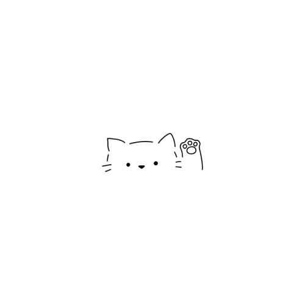
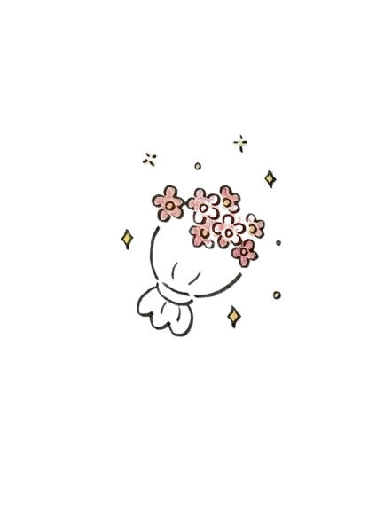
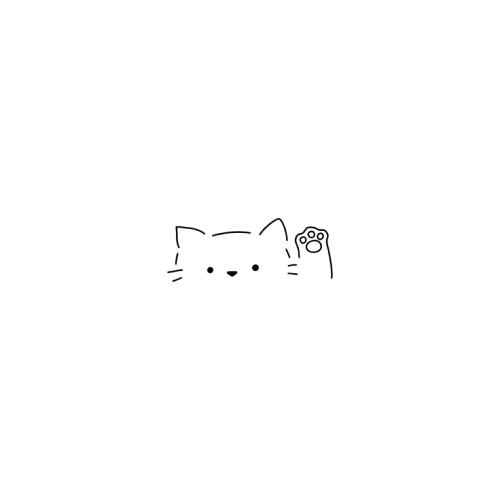
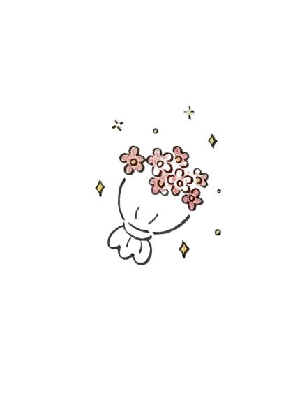

for Viswanath
i made you a tiny postcard — flip it ↓
(handwritten, silly, and honest)

 



tap to flip
psst—open me again later
i love you.
i miss you in small, quiet moments — the kettle whistling, the pause after a laugh, the soft space before sleep.
if feelings could doodle, they’d draw us as two bears who keep bumping into each other no matter how the page turns.
this is me waving from my corner of the day: hi, silly human. you make the ordinary feel warm.
you are my favorite person — in lowercase, handwritten, always.

flip back